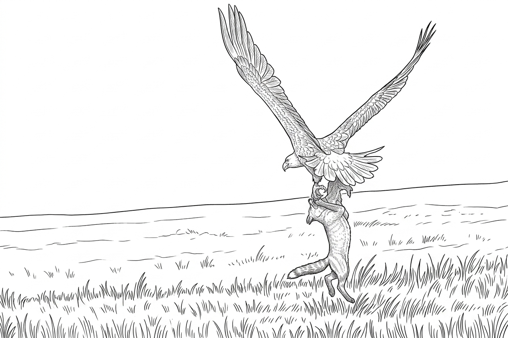

第 1 章，共 12 章
屬靈的眼光

在我們居住的峭壁與海灣之間，住著許多海鷗，以及各種海鳥。黃昏的時候，夕陽將陡峭的岩壁染成橘紅色。海風吹過懸崖上的樹木與灌木叢，年復一年，從不停止。那些樹木因此長得格外堅硬，枝幹向著風的方向彎曲，卻始終沒有倒下。
在峭壁邊緣的大樹上，眾鷹築起自己的巢穴。巨大的巢由粗大的樹枝層層堆疊而成，牢牢地架在高高的樹冠之間。巢裡的幼鷹蓬鬆柔軟，總是張著嘴，發出細細的叫聲，等待父母從海上帶回食物。鷹父鷹母則輪流飛出去覓食，再帶著食物回到巢中。我們這一帶的白頭鷹，冬季來臨時，我們向南遷徙；夏季來臨，又飛回北方。對我們而言，大地與海洋就是永遠展開的家園。
那年夏天，我已經不再是一隻幼鷹。我的頭上開始長出白色的羽毛，利爪也比以前強壯。我喜歡飛到高處，從天空俯瞰陸地與海洋。我喜歡觀察一切正在發生的事情。
有時候，我會看見巨大的藍鯨衝破海面，從牠巨大的鼻孔中吐出一股溫熱的水氣。附近的魚群受到驚動，在牠們身旁躍出水面。海鷗、北極燕鷗、信天翁、海燕和其他海鳥，也常常被這些巨大的生物吸引。我們在牠們上方盤旋，追逐風，追逐浪，也追逐彼此。夕陽落下之後，我們便各自回到峭壁上的巢穴。岩壁沐浴在最後一抹餘暉中，而藍鯨則重新潛入深海。

那時候，我最喜歡的事情，就是飛翔。因為我們鷹有一雙極其敏銳的眼睛。在高空中，我可以看見地面奔跑的兔子、小松鼠，甚至躲在草叢中的蛇。我們的視力遠勝許多其他動物，而從高空俯衝下去捕捉獵物，也是我們與生俱來的本領。
可是，有一件事我始終做不好。
是抓魚。
水中的魚在波光之下游動。陽光穿透水面，魚的身影時隱時現。每當我以為自己已經看準目標，俯衝下去，伸出雙爪，魚卻早已游到另一個地方。我一次又一次失敗。
我們鷹的眼睛能看見很遠的地方，卻不代表我們總能看準水中的魚。那段日子，我正在努力學習。
那是一個炎熱而幾乎沒有風的下午。我整天都在練習捕魚。我盯著水面，一次又一次俯衝下去；一次又一次伸出雙爪；一次又一次撲了個空。最後，我筋疲力盡。我停在一根樹枝上，喘著氣，望著海面。
就在那時，我注意到峭壁另一側停著一群金雕。牠們正在休息，準備繼續向南遷徙。
帶領牠們的，是一隻年長的金雕。牠安靜、敏銳，很少說話。可是我很快發現，牠正在看著我。
過了一會兒，牠開口了。
「你必須向上看。」
「什麼？」我抬起頭。
牠沒有回答我的問題，只是說：
「試著抬頭向上看。你會看得更遠，也會看得更清楚。」
「這個我知道。我父母從小就教我，要隨時觀察四周。」我有些不以為然。
金雕沒有爭辯。牠只是抬起頭，朝著遠方望去，然後用嘴指了一個方向。
「你看那座小島。」
我順著牠的目光看去。
那座小島離我們很遠。岩石上停著一隻海鷗，海鷗嘴裡叼著一條蛇。那條蛇還在吐著舌頭。
我有些驚訝。那麼遠，我竟然也能看見。
金雕說：「不要背著陽光看世界。學習透過陽光看世界。」
我望著牠。「透過陽光？」
「是的。」牠停了一會兒，又說：「你以前看魚的時候，只注意牠現在在哪裡。」牠望向海面。「可是魚不會停在那裡等你。」
「當你開始俯衝的時候，魚還會繼續游動。你必須留意牠的方向，掌握牠移動的速度，在心裡先看見牠即將出現的位置。」
我慢慢明白牠的意思。
牠繼續說：「真正出爪的那一刻，不只是看見牠在哪裡，而是要知道牠下一刻會往哪裡去。」
「可是我怎麼知道牠會往哪裡去？」我問他。
「你必須觀察。」牠回答。
「看牠怎麼游，看水流怎麼移動，看牠在波浪中的方向。你看的不只是牠現在的位置，而是牠正在往哪裡去。」
牠又補充了一句：「真正的眼光，不只是看見一個東西。」「還要看見它正在發生什麼。」
這句話，我記住了。
我再次飛向海面。這一次，我沒有急著俯衝。我先觀察。那條魚向左游，停了一下，又轉向前方。我開始留意牠的速度。
然後，我展開翅膀。俯衝。海風吹過我的羽毛。魚還在游。我調整方向，再往下。雙爪伸出。那一瞬間，我抓到了牠。

我第一次真正抓到了一條魚。
我飛回樹枝。那一刻，我才明白，原來「看見」和「看懂」是兩回事。
我吃飽了。但更重要的，是一種我從未有過的喜悅。
我望向那隻年長的金雕。我開始明白，牠不只是一個遷徙的同伴。
我了解，牠是一位老師。
第二天，我又遇到了一件事。一隻狐狸正在追逐一隻母鼠和兩隻小老鼠。我從高處看著牠們。狐狸很大，母鼠很小，兩隻小老鼠更小。
我很快就看出來，如果我抓不到狐狸，那兩隻小老鼠應該不難。我正準備俯衝，金雕卻阻止了我。
「你要抓那兩隻小老鼠嗎？」
「當然。」
我有些不明白。
「為什麼不可以？」
牠說：「你沒有看見嗎？」
我重新望下去。
「看見什麼？」
「那隻母鼠。」
我看見了。牠正擋在狐狸與自己的孩子中間。
金雕說：「牠知道自己可能會死，卻仍然站在孩子前面。」
我沉默了。
「牠願意用自己的生命保護孩子。」
過了一會兒，金雕又問我：
「你還記得我昨天教你的嗎？」
我知道牠指的是那句話。
「抬頭向上看？」
「是。」
我有些不服氣。「可是這和老鼠有什麼關係？」
金雕沒有責備我。牠只是說：「當你觀看任何事物，都不要只看表面。」
牠抬起頭，看了一眼天空，說：「學習透過光來看。」這對我而言，比捕魚困難得多。因為我不知道怎麼做。
我按照牠的意思，調整自己的位置，讓陽光從上方照下來，然後重新看向地面。
狐狸。母鼠。兩隻小老鼠。
起初，我什麼也沒有看見。可是其他金雕都安靜地望著我。牠們似乎期待我會看見不同的。
於是，我再試一次。我抬頭看向天空，看著陽光，然後順著光線，再看向地面。
那一刻，我忽然看見了一些從前從未看見的東西。
狐狸的頭上，有一小團烏雲。
而母鼠的頭上，有一小團白雲。那朵白雲柔軟、潔白，像一團被陽光照亮的棉花。而狐狸頭上的烏雲，卻像藏著某種陰暗的東西。
我第一次明白，同一個世界，並不是每一雙眼睛所看見的都一樣。以前，我只知道用眼睛觀看。現在，我似乎開始看見另一個世界。
金雕看著我。牠知道我看見了。牠沒有立刻解釋。只是問我：
「你看見了什麼？」
我想了一會兒。「我看的他們的頭上有黑雲和白雲，那善類有白雲。」
金雕點了點頭。「很好。」
我望著牠。「什麼很好？」
牠卻沒有回答。
牠只是再次看向那隻母鼠。「有些事情，不能只用眼睛看。」
我沒有完全明白。但我記住了這句話。
就在這時，第一隻金雕突然飛了出去。牠從高空俯衝而下，帶走了狐狸。母鼠立刻帶著兩隻小老鼠鑽回洞裡。

那天之後，我開始更加仔細地觀看。我練習金雕所說的「透過光觀看」。我看天空，看海洋，看風，看樹木，看動物，也看人。漸漸地，我發現了一些特別的事情。有些動物的頭上，似乎籠罩著一小團白雲。那雲朵柔軟、潔白，像一團被陽光照亮的棉花；有些動物的頭上，卻像是聚著一片烏雲，灰暗而沉重。
每一次看見白雲和烏雲，我都會想起老師說過的那句話：「學習透過上面的光來看。」
幾天之後，我終於忍不住問牠：「老師，我會永遠擁有這種眼光嗎？」
牠沉默了一會兒。然後回答：
「不一定。」
我有些驚訝。
「為什麼？」
牠說：「因為眼睛會疲倦，心也會遲鈍。」
我安靜下來。
「如果你只依靠自己的眼睛，有一天，你會再次只看見表面。」
牠繼續說：「你必須常常抬頭。透過光觀看。」
我想問牠更多。可是牠沒有再說。牠只是望著遠方。
過了一會兒，牠才慢慢說：「並不是每一隻鷹，都會用同樣的方式看世界。」
我抬頭看著牠。「那為什麼讓我看見？」
牠沒有直接回答。牠只是說：「我們都是造物主親手造的。祂給每一隻鷹不同的翅膀，也給每一隻鷹不同的路。」
我問：「那我要做什麼？」
牠看向遠方，說：「等你真正明白自己看見了什麼，你自然會知道。」
這一次，我沒有再追問。因為我知道，有些答案，現在還不到知道的時候。
那天傍晚，我飛到更高的地方。天空比平常更加清澈。太陽正在西沉。金色的光落在海面上，像一條延伸到遠方的道路。
我忽然想起金雕說過的話。
「學習透過光看世界。」
我望著那片光。我第一次想到，也許牠真正教我的，從來不只是如何看魚。也許，牠想教我的，是另一種觀看世界的方法。
幾天之後，金雕們準備繼續向南遷徙。我的胸膛裡充滿了想對老師說的話。
我想告訴牠，我學會了什麼。
我想告訴牠，牠正在改變我的眼光。
可是到了最後，我什麼也沒有說出口。我只是希望牠能留下來。然而，金雕們一隻接一隻展開翅膀。牠們飛向南方。我站在峭壁上，看著牠們越飛越遠。牠們的身影漸漸縮小，最後，只剩下一個模糊的黑點。再後來，連黑點也消失在遙遠的地平線上。
我的老師真的走了。風從海面吹來。我站在那裡，很久沒有動。我忽然想起牠留給我的一切。
抬頭。
看見光。
透過光看世界。
我知道，我看到特殊的東西，是以前沒有看到的。我望著金雕消失的方向。沉默了很久。然後，我對著遙遠的天空，大聲喊了一句：
「是的，我記住了。」